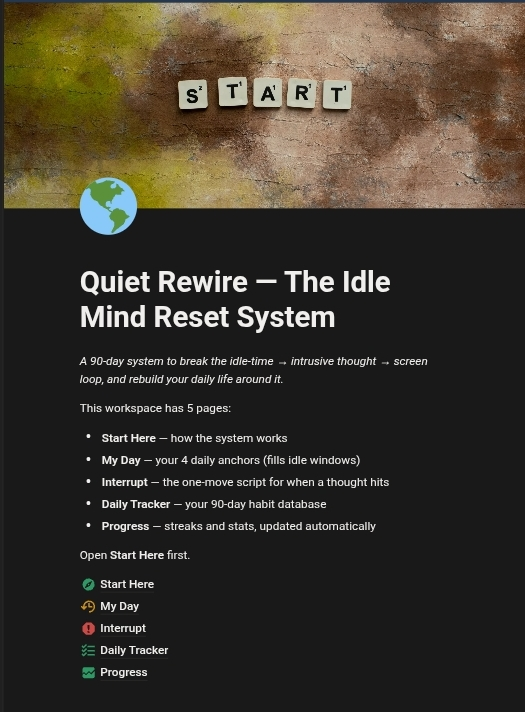

For people who work from home, study, or spend long hours alone with their phone
How to Break the Idle-Time Loop in 90 Days — Even If You've Never Been Able to Rely on Willpower
Close the idle windows before they open. Interrupt the urge the second it shows up. Rebuild your identity through 6 habits, tracked automatically, every single day.

- 90-Day System
- Instant Notion Access
- Lifetime Updates Included
Instant access · Works on any device · No app to install
Sound Familiar?
You've read the productivity advice. You've deleted the apps before. You already know what you're "supposed" to do. That's not the problem.
-
"I tell myself it's about willpower, but it's really about the empty hours no one's watching."
-
"A thought shows up out of nowhere, and the screen is right there before I've even decided anything."
-
"Afterward the shame hits, and somehow that shame just sets up the next round."
-
"I've tried blocking apps and willpower quotes, and neither one touches the actual idle time where this starts."
-
"I keep getting better at feeling bad about it instead of actually breaking the loop."
If any of this sounds like you — keep reading. This is for you.
Every Unstructured Day Is Another Rep of the Same Loop
The shame gets heavier. The identity gets harder to shake. Ninety days from now you're either a structured person with proof of change — or exactly where you are today, just further into the pattern.
But there's a better way.

Introducing Quiet Rewire
From reactive and stuck in a private loop, to structured, in control, and building visible proof of change every day.
Quiet Rewire isn't another mindset course. It's a Notion-based system with a fixed daily structure, a script for the exact moment the urge shows up, and six tracked habits that rebuild who you are through repetition — not motivation.
See What's InsideHere's Exactly What You Get
Structure
4 daily anchors that close the idle windows before they open. No more long unsupervised stretches with nothing scheduled.
Interrupt
A 3-step script for the exact second a thought or urge shows up. You don't have to out-willpower the moment — you just follow the move.
Rebuild
6 fixed daily habits, tracked automatically for 90 days. A new identity builds itself through repetition, not motivation.
Full Notion System
Start Here, My Day, Interrupt, Daily Tracker, and Progress Charts — five connected pages, ready on day one.

Hi, I'm Samuel
I built this system for myself first, out of the same loop I'm asking you to break. I'm not a therapist. I'm not a guru. I'm someone who found a way out and turned it into a repeatable structure.
Quiet Rewire is that structure — the exact anchors, interrupt script, and tracked habits I used to close the idle hours where the loop used to start. I built it because motivation never held. Structure did.
- 90Day System
- 6Tracked Habits
- 1:1Built From Experience, Not Theory
This Is A New System — Here's What That Means For You
This is a new release. I'm not going to fill this space with fake reviews or borrowed names to make it look otherwise. Honesty matters more to me than a wall of five-star quotes that don't exist yet.
What I can tell you is this: every person who joins now shapes what this becomes. You're not a number on a testimonial wall — you're an early user whose feedback directly changes the system for everyone after you.
What Early Users Get
- First access to the complete system, from day one
- Free lifetime updates as the system improves
- Direct input into what gets built next
Everything You Get When You Start Today
A complete system worth ₦68,000 — yours for one low price.
Quiet Rewire — The Idle Mind Reset System
The complete Notion template: Start Here, My Day, Interrupt, Daily Tracker, Progress Charts.
Value: ₦45,000Free Lifetime Updates
Every future improvement to the system, no extra cost, ever.
Value: ₦15,000The Habit Swap List
Backup habits ready to slot in if one of the fixed 6 doesn't fit your life.
Value: ₦8,000💳 Secure checkout · 🔒 Instant access · ✅ Lifetime updates included
No Refund Policy. Here's Why.
There's no refund policy here, because this was never about the Notion template. You're not paying for pages and checkboxes — you're paying for who you become over the next 90 days.
Follow the system, and in 90 days, you will not be the same person who bought it. That's the guarantee.
The risk is on you to follow it — not on me to refund it.
This Is For You If...
- You work from home, with long stretches unsupervised
- You're a student with unstructured hours between classes
- You spend long hours alone with a phone or laptop
- You're tired of the loop and the shame that follows it
- You're ready for structure, not another pep talk
This Is NOT For You If...
- You're comfortable with things staying exactly as they are
- You're looking for a quick fix rather than a 90-day process
- You want a refund safety net rather than a reason to follow through
Frequently Asked Questions
It's a Notion template with a built-in method. You get five connected pages — Start Here, My Day, Interrupt, Daily Tracker, and Progress Charts — plus the exact structure and script that make them work.
The tracker logs it and moves on. A missed day isn't a failed system — it's data. You pick the anchors back up the next day and keep going.
No. Everything runs inside Notion, which is free to use. You'll have instant access on any device once you're in.
Because you're not paying for a template — you're paying for who you become by following it for 90 days. That outcome depends on you, not on a refund window.
Every future improvement to the system — new anchors, refined scripts, tracker upgrades — at no extra cost, for as long as it exists.
A tracker only shows you what happened. Quiet Rewire closes the idle windows before the loop starts and gives you a script for the moment the urge hits — the tracking is just the proof layer on top.
A few minutes to log your anchors and habits each day. The system is built to fit inside your day, not add another obligation on top of it.
That's exactly what the Habit Swap List bonus is for — a set of backup habits you can drop in to replace any of the fixed 6 that don't fit your situation.
The Loop Doesn't Pause While You Wait
Every day you wait is another day inside the same loop. Not a discount ending — a version of you that doesn't start yet.
Start Quiet Rewire — ₦10,000This Is Your Decision Point.
You already know how the next 90 days go if nothing changes. The system is built. The structure is ready. The only thing left is whether you start today or run the same loop for another 90 days.
Start Quiet Rewire — ₦10,000Instant access · Works on any device · No app to install